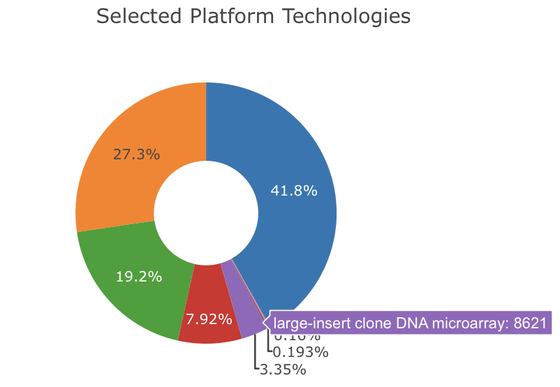
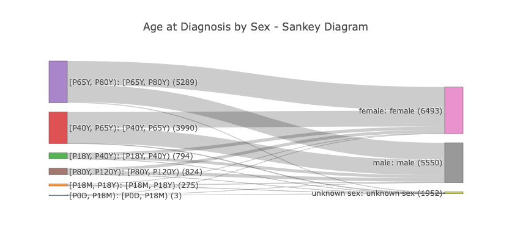

Data Summaries ("Aggregations")¶
Overview¶
Warning
This is the work in progress for a general aggregation/summary documentation. The most recent version is currently maintained at bycon.progenetix.org/data-summaries/.
Data summaries (also referred to as "aggregations") are summary statistics delivered beacons. They can reflect different aspects of the beacon's content, such as:
- static overview of the content of a resource
- content of the resources's collections (datasets or cohorts in the Beacon model)
- dynamically generated summaries of query results
Typical summaries reflect the count of value occurrences for individual properties (1-dimensional, "1D") or the intersection of two properties (2-dimensional aggregations, "2D").
Further Info
Fast Overview Using Test Implementations on Progenetix/beaconPlus
In spirit of the tried and tested "implementation driven development"
we provide full stack implementations on top of the Progenetix
resource through the bycon framework.
The examples below link to the staging instance of Progenetix with - fully functional - test versions of aggregation responses (which obviously might change along with the schema proposal).
/aggregation_terms/endpoint response- Example aggregation response for TCGA cancer samples
- This is a
resultSetsresponse for the/biosamples/endpoint withrequestedGranularity=aggregatedand using thesampleAge::sampleSexaggregation term concatenation of id values from the/aggregation_terms/call above - the summaries are reported in
resultSets.n.resultsAggregation
- This is a
- Age/sex distribution for brain cancer samples shown in a dashboard
- Content dashboard for the Progenetix data
- This is purely a showcase for 1 and 2 dimensional representations w/o any refinements. However, based on the JavaScript version of plotly it provides some hints for the "front-end vs. back-end" discussions (e.g. the library automatically allows to subset on the 2nd dimension w/o any additional code or back-end support).
- One outcome of this implementation is the ambiguity of "other", "undefined", "not reported" - which might need some specification for congruency.
Scope of the summary counts¶
On which entity are the summaries reported?
Do the summaries have to be projected to the requested entity, or can they
be reported on basis of pre-defined entities (e.g. can a request to /individuals/
report the numbers for the matched sample histologies or the individuals with the
matched histologies?.
General Structure and Calling¶
Aggregation responses or summary data are called by setting the requestedGranularity
to aggregated. Example:
- samples in Progenetix
The aggregation types to be returned can be specified by using the additional
request aggregators parameter as well as optional parameters for binning or
term selection (TBD). Example:
- Age groups labeled by sex for TCGA cancer individuals in Progenetix
- staging.progenetix.org/beacon/biosamples/?requestedGranularity=aggregated&filters=pgx:cohort-TCGAcancers&aggregators=sampleAge::sampleSex
- age/sex distribution for brain cancer samples shown in a plot staging.progenetix.org/queryResultsDashboard/?datasetIds=progenetix&filters=NCIT:C3268&aggregators=sampleAge::sampleSex
Components¶
Empowering aggregation responses or summary data relies on several components:
- schema definitions
- data aggregation pipelines
- an informational response for about supported summaries (similar to the
/filtering_terms/endpoint) - request parameters for selecting summary types
aggregators, also suitable forGETrequests- by custom, multiple id values for e.g. 2D counts are concatenated by
::sampleAge::sampleSex
- by custom, multiple id values for e.g. 2D counts are concatenated by
aggregatorsobjects (with at leastidvalues) forPOSTed aggregation schemas- additional reuest parameters for modifying responses (e.g. limits, binning...)
- the response format for the summaries
- the front end logic - which is not part of this itself but serves for understanding requirements and test formats
Why not using filters as aggregation terms?
While it would be possible to use filters to define aggregation terms,
this would lead to confusion as filters are primarily used to define
query constraints. Additionally filters have different formats which
would be problematic to handle in aggregation contexts:
ontologyTermfilter are a type of "valued filters" where a the aggregation on the filtering term would lead to a single count response; i.e. all the different terms existing at the property would have to be indicatedalphanumericfilters consist ofid(mapping to a concept), anoperatorand avalue; here an aggregation would only make sense on theconceptpart with or without indicators for a binning of the values but not by providing the values themselves.
Therefore, a separate, property based mechanism for defining aggregation terms is preferred.
Aggregation Schema Definitions¶
Aggregation schema definitions are necessary to define the types of aggregations supported by a Beacon implementation. These definitions should include:
- the
idof the aggregation - a
label, e.g. used as a title in visualisations - a
descriptionof what the aggregation represents, e.g. used for info tooltips - the
conceptsinvolved in the aggregation- usually one or 2 ("dimensions"); see below
- additional parameters for modifying the aggregation behaviour or indicating
behavior
sorted: truecan indicate to a client that a response has a predefined order
Concept definitions and parameters¶
Each concept involved in an aggregation should be defined with:
- the scoped
property, i.e. property in the respective entity to be aggregated- TODO: In cases of object style properties (e.g.
id, labelontology terms) we currently define it as specific field (e.g.individual.diseases.diseaseCode.id) instead of the logical concept (individual.diseases.diseaseCode). This might be changed if necessary.
- TODO: In cases of object style properties (e.g.
- optional modifiers:
termsfor specifying terms to be included in the aggregationsplitsfor specifying how to split the values (e.g. binning for numeric or pseudo-numeric values such as ISO8601 durations for ages)- at this time
splitsseem as the best way to specify binning, but this might be changed later on splitsalso correspond nicely to database aggregation concepts such as$bucketsand$splitsin MongoDB
- at this time
Examples¶
Single property aggregation¶
id: sampleOriginDetails
label: Anatomical Origin
description: >-
Count of anatomical sites in matched biosamples
concepts:
- property: biosample.sample_origin_detail.id
Single property aggregation with splits¶
The following example includes pre-defined age group splits which can be overridden by a request parameter (to be defined; probably best to have it in a POST object):
id: ageAtSampleCollection
label: Age at Sampling
description: >-
Age at collection of the sample
sorted: True
concepts:
- property: biosample.collectionMoment
splits:
- P0D
- P18M
- P18Y
- P40Y
- P65Y
- P80Y
- P120Y
Single property aggregation with terms¶
id: selectedCarinomaDiagnoses
label: Selected Diagnostic Classes (carcinomas; by NCIT)
description: >-
Count of histological diagnoses in matched biosamples for selected carcinomas
scope: biosample
concepts:
- property: biosample.histological_diagnosis.id
terms:
- NCIT:C9384 # Kidney Carcinoma
- NCIT:C3513 # Esophageal Carcinoma
- NCIT:C35850 # Head and Neck Carcinoma
- NCIT:C4878 # Lung Carcinoma
- NCIT:C207229 # Pancreatic Carcinoma
- NCIT:C4911 # Gastric Carcinoma
- NCIT:C2955 # Colorectal Carcinoma
- NCIT:C7927 # Liver Carcinoma
2-dimensional aggregation¶
id: diseaseBySex
label: Sex distributions for Diseases
description:
- ICD-O 3 histologies by sex in matched biosamples
concepts:
- property: individual.diseases.diseaseCode.id
- property: individual.sex.id
More than 2 dimensions¶
While the Beacon specification currently predicts 1- or 2-dimensional summaries in principle the protocol is open for higher dimensional intersections.
3-dimensional summary example
id: cancerTypesBySexAndCountry
label: Cancer types (by sex and origin)
scope: biosample
concepts:
- property: biosample.histological_diagnosis.id
- property: biosample.individual_info.sex.id
- property: biosample.geo_location.properties.ISO3166alpha3
description:
- Cancer type by sex and country of origin in matched biosamples
distribution:
- conceptValues:
- id: NCIT:C4017
label: Breast Ductal Carcinoma
- id: NCIT:C16576
label: female
- id: USA
label: USA
count: 264
- conceptValues:
- id: NCIT:C2919
label: Prostate Adenocarcinoma
- id: NCIT:C20197
label: male
- id: USA
label: USA
count: 238
- conceptValues:
- id: NCIT:C4017
label: Breast Ductal Carcinoma
- id: NCIT:C16576
label: female
- id: DEU
label: DEU
count: 66
...
Client: Dashboard Generation¶
One of the main use cases for aggregation responses is to generate data dashboards. These dashboards can provide visual summaries of the data content of the resource, either as static overviews or dynamically generated views based on user queries.
Client or beacon side configurations? While the actual rendering of dashboards is typically a client-side task, some aspects of dashboard generation might in principle be influenced through beacon-side configurations. Examples here could be the limiting of responses (e.g. "top 10 diagnoses") and the determination of visualisation types for certain aggregations. Here some recommendation scan be provided (WiP):
- clients should be able to request an upper limit for the number of categories to be returned for a given aggregation term (TBD: parameter name)
- rendering styles are defined client side w/o Beacon parameters
Example Dashboard Implementation using Plotly.js¶
Data Transforms¶
1D Summary to Bar or Pie Chart¶
A "1D" summary aggregation involves a single property and reports a distribution
array where each item contains:
- a list of 1
conceptValues(withidandlabel) - a
count
An example summary response (here using the GeoJSON tagging for biosamples in Progenetix - not a standard Beacon property yet) would look like this:
resultsAggregation: [ {
id: "sampleCountries",
label: "Sample Countries",
scope: "biosample",
concepts: [ { property: "biosample.geo_location.properties.ISO3166alpha3" } ],
description: "Count of countries of origin in matched biosamples",
distribution: [
{
conceptValues: [ { id: 'USA', label: 'United States' } ],
count: 389
},
{
conceptValues: [ { id: 'CHE', label: 'Switzerland' } ],
count: 17
},
{
conceptValues: [ { id: null, label: null } ],
count: 16
}
]
} ]
Plotly.js implements 1- and 2-dimensional charts through data traces, i.e. lists
of one or more trace objects containing e.g. lists for x and y values and
optional chart information.
An example for a single data trace derived from the 1D summary above would look like:
{
x: [ 'USA', 'CHE', null ],
y: [ 389, 17, 16 ],
hovertext: [ 'United States: 389', 'Switzerland: 17', 'null: 16' ]
}
The transformation from a Beacon summary to a Plotly trace for a bar chart can be achieved through e.g.:
let x = [];
let y = [];
let hovertext = [];
distribution.forEach( (item) => {
x.push( item.conceptValues[0].id );
y.push( item.count );
hovertext.push( `${item.conceptValues[0].label}: ${item.count}` );
} );
let trace = { type: "bar", x: x, y: y, hovertext: hovertext, hoverinfo: "text" };

Here, hovertext is an optional addition for better interactivity and type: "bar"
could also be type: "pie" for pie charts. Obviously, additional data manipulation
(filtering, sorting, calculation of summary for "other" values...) will be needed.
This example shows a pie chart for a similar 1D summary generated
through SimplePlotlyPie in bycon's dashboard implementation.
2D Summary to Stacked Bar Chart¶
Creation of a stacked bar chart from a 2D aggregation response requires some data processing to collate all the different values for the 2nd dimension per value of the 1st dimension / independent axis. In the data structure of the 2D (or more than 2...) Beacon summary responses one would usually use first concept for the independent axis; however, the data structure would also allow to swap this.
Processing Beacon summaries for a stacked bar chart requires to:
- identify all unique values for the 1st and 2nd concept
- the first concept here defines the
xaxis categories- example: diagnosis codes
- the second concept defines the split instances of observations
- example: sex (per diagnosis)
- the first concept here defines the
- create a data trace for each unique value of the 2nd concept
- each trace will contain
xandyvalues for all unique values of the 1st concept (e.g.diagnosis) for the observations matching the 2nd concept value (e.g.male)
- each trace will contain
An example implementation targeting Plotly.js based visualization can be found as WiP inside the bycon/beaconplusWeb/ code .

A stacked bar chart generated in Plotly.js from a Beacon summary response for a 2D aggregation.
The hovertext shows the breakdown of counts per category, with the "label" of
the 2nd concept shown in the legend and hover text.
Sankey diagrams¶
Sankey diagrams are another way to visualise 2D (or more) aggregations. The data of a Beacon summary distribution can be transformed for Sankey charts by creating
- a single list of unique nodes (i.e.
idvalues) for all concept values in both dimensions - mapping each co-occurrence of 2 concept values to a
sourceandtargetindex in the node list along with the respectivecountasvalue

This example for a Sankey chart shows the relation of binned age values and sex
for ~15000 individuals in Progenetix with a match for a focal copy number deletion
involving the CDKN2A locus, generated as a life response using the the bycon code for summary response and Plotly.js based the visualization. No styling added ¯\_(ツ)_/¯